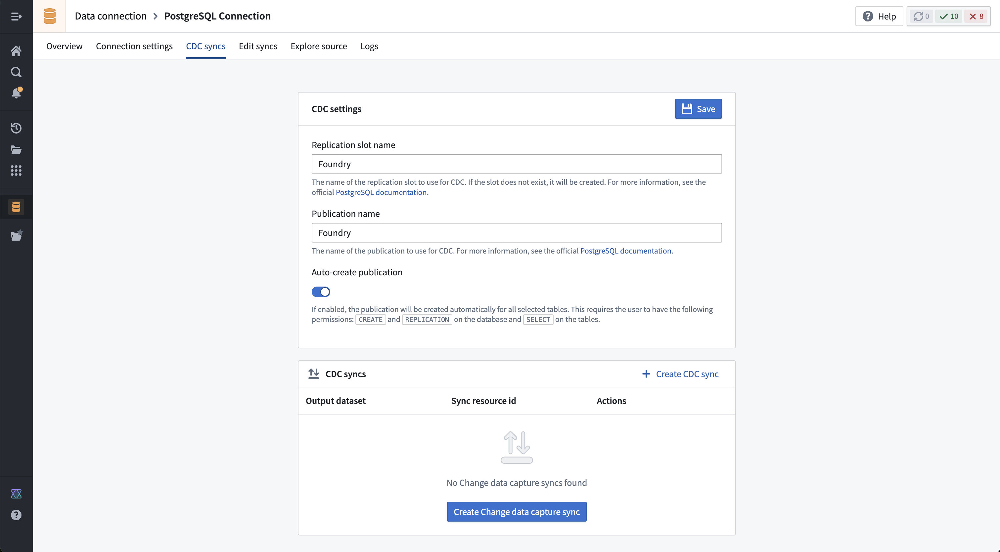

Connect Foundry to PostgreSQL â to read and sync data between PostgreSQL databases and Foundry. This connector uses the official PostgreSQL driver â on major version 42, which is compatible with all versions of PostgreSQL 8.2 and above.
| Capability | Status |
|---|---|
| Exploration | ð¢ Generally available |
| Batch syncs | ð¢ Generally available |
| Incremental | ð¢ Generally available |
| Iceberg syncs | ð¢ Generally available |
| Change data capture syncs | ð¡ Beta |
| Streaming exports | ð¡ Beta |
| Table Exports | ð¢ Generally available |
Learn more about setting up a connector in Foundry.
The Foundry PostgreSQL connector requires the use of a username and password for authentication. We recommend the use of service credentials rather than individual user credentials.
Username and password authentication may be used in conjunction with client and/or server certificates and SSL modes requiring verification of these certificates.
You must ensure that the provided user has the necessary privileges on the target database, as well as permission to read from or write to the target table(s). For change data capture, the user may also require CREATE and REPLICATION permissions on the target database.
The PostgreSQL connector requires network access to the database instance that you wish to connect to. PostgreSQL connections will normally use a hostname or IP to connect on port 5432.
If you are running the connection to PostgreSQL in Foundry, the appropriate egress policies must be added when setting up the source in the Data Connection application.
For cloud-hosted PostgreSQL instances accessible over the Internet, such as PostgreSQL in Amazon Relational Database Service (RDS), you must add an egress policy for the hostname of the database or the IP address if you are not using a hostname. Review the official documentation for the provider of your managed, cloud-hosted PostgreSQL instance for more details on the required networking configuration.
You will need to ensure that you have allowed inbound traffic from Foundry to your PostgreSQL instance. You can view the egress IPs where traffic from Foundry will originate in the Network egress page in Control Panel. Review the documentation for your hosting provider to learn how to allow traffic from these IPs to your database instance.
If you are connecting to a managed instance of PostgreSQL hosted in Amazon RDS, you can use a direct connection with the necessary egress policies.
<your-database-name>.<unique-identifier>.<region>.rds.amazonaws.com (port 5432)When connecting to an RDS PostgreSQL instance, you may need to add the RDS root Certificate Authority (CA) as a server certificate in the source configuration panel. Download the rds-ca-2019-root.pem from the Amazon S3 site â, then copy the certificate details into Foundry to trust connections to Amazon RDS. For more information on connecting to RDS database instances using SSL/TLS, review the official AWS documentation â.
| Option | Required? | Description |
|---|---|---|
Host type |
Yes | Specify how Foundry should connect with your PostgreSQL database. Option 1: Hostname Provide a hostname. This is the recommended option for all PostgreSQL connections and should always be used when connecting to a cloud-hosted PostgreSQL instance. For example, an instance hosted in Amazon RDS â. Option 2: IPv4 Provide an IPv4 address. If you normally connect using an IPv4 address, either within a corporate network or over the Internet, you can use this option. Option 3: IPv6 Provide an IPv6 address. Use this option if you normally connect using an IPv6 address. |
Port |
Yes | Specify a port to use when connecting. The default port for most PostgreSQL instances will be 5432. For more information on ports, see the official documentation â for PostgreSQL as well as the configuration for your database instance. |
Database name |
Yes | The name of the database you are connecting to within your instance of PostgreSQL. |
Authentication |
Yes | Configure using the Authentication guidance shown above. |
Network Connectivity |
Yes | You must provide egress policies to allow connections to your PostgreSQL instance. Refer to the Networking section for more details. |
SSL Mode |
Yes | Defaults to verify-full. For more details, review the official documentation â for the ssl-mode connection parameter on the PostgreSQL JDBC driver. |
:::callout{theme="neutral" title="Beta"} Change data capture syncs for PostgreSQL are in the beta phase of development and may not be available on your enrollment. Functionality may change during active development. Contact Palantir Support to request access to this feature. :::
The PostgreSQL source supports change data capture (CDC) syncs.
Since PostgreSQL supports logical replication, change data capture can stream changes to configured tables in near realtime. According to the PostgreSQL documentation â:
Logical replication is a method of replicating data objects and their changes, based upon their replication identity (usually a primary key).
Foundry change data capture syncs from PostgreSQL function by using an existing replication slot or creating a new replication slot and publication on the target database. Only one replication slot and publication may be configured per data connection source, however any number of tables may be streamed to Foundry over a single connection. If you wish to use multiple replication slots or publications, you can create multiple data connection sources that connect to your database.
Before setting up a change data capture sync, first ensure that you have a working PostgreSQL source connection. Then, navigate to the CDC syncs tab and provide the additional required configuration for change data capture.

| Option | Required? | Description |
|---|---|---|
| Replication slot name | Yes | The name of the replication slot to use for CDC. If the slot does not exist, it will be created. For more information, see the official PostgreSQL documentation â. |
| Publication name | Yes | The name of the publication to use for CDC. For more information, see the official PostgreSQL documentation â. |
| Auto-create publication | Yes | If enabled, the publication will be created automatically for all selected tables. This requires the user to have the following permissions: CREATE and REPLICATION on the database, and SELECT on the tables. |
Once the required settings for change data capture are configured, you can navigate to the Overview page or stay on the CDC syncs page and select + Create CDC sync to create a new change data capture sync.
:::callout{theme="neutral"} The exploration runtime must be working to create a change data capture sync. If the runtime is still initializing, you may need to wait a few seconds and refresh the page to proceed with creating a change data capture sync. :::
For more information on using CDC with PostgreSQL, review the official documentation â on logical replication for the version of PostgreSQL in use.
The following example queries the Postgres source used in the Deep Dive: Creating Your First Data Connection â guide.
This example uses the psycopg2 â package to query the Postgres source.
from transforms.api import transform_pandas, Output
from transforms.external.systems import external_systems, Source
import psycopg2
import pandas as pd
@external_systems(
postgres_source=Source()
)
@transform_pandas(output=Output())
def compute(postgres_source):
conn = psycopg2.connect(
host="host", # Database host address
port="5432", # Database port
database="postgres", # Database name
user="user", # Database username
password=postgres_source.get_secret("PASSWORD") # Database password
)
query = "SELECT * FROM plants;"
return pd.read_sql_query(query, conn)
This example writes rows from an input dataset to a PostgreSQL table using psycopg2 â. It creates the target table if it does not already exist. A column mapping dictionary handles differences between Foundry column names and PostgreSQL column names.
import logging
from transforms.api import lightweight, Output, transform_pandas, Input
from transforms.external.systems import external_systems, Source
import psycopg2
import pandas as pd
logger = logging.getLogger(__name__)
# Maps Foundry column names to PostgreSQL column names
COLUMN_MAPPING = {
"plant_name": "name",
"plant_height": "height_cm",
"plant_color": "color",
}
CREATE_TABLE_SQL = """
CREATE TABLE IF NOT EXISTS plants (
name TEXT PRIMARY KEY,
height_cm DOUBLE PRECISION,
color TEXT
)
"""
@lightweight
@external_systems(
postgres_source=Source("<source_rid>")
)
@transform_pandas(
Output("<output_dataset_rid>"),
plants_df=Input("<input_dataset_rid>")
)
def compute(postgres_source, plants_df):
conn = psycopg2.connect(
host="<your_host>",
port="5432",
database="<your_database>",
user="<your_user>",
password=postgres_source.get_secret("PASSWORD"),
)
pg_columns = [COLUMN_MAPPING[c] for c in plants_df.columns]
placeholders = ", ".join(["%s"] * len(pg_columns))
columns_str = ", ".join(pg_columns)
insert_sql = f"INSERT INTO plants ({columns_str}) VALUES ({placeholders})"
try:
with conn:
with conn.cursor() as cursor:
cursor.execute(CREATE_TABLE_SQL)
for _, row in plants_df.iterrows():
cursor.execute(insert_sql, tuple(row))
except Exception as e:
logger.error(f"Error writing to PostgreSQL plants table: {e}")
raise RuntimeError(f"Failed to write data to PostgreSQL: {e}") from e
finally:
conn.close()
return pd.DataFrame({"rows_written": [len(plants_df)]})